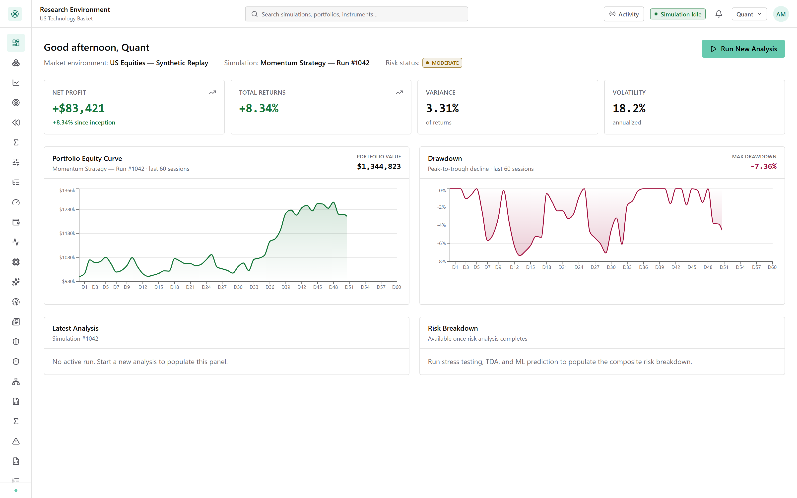
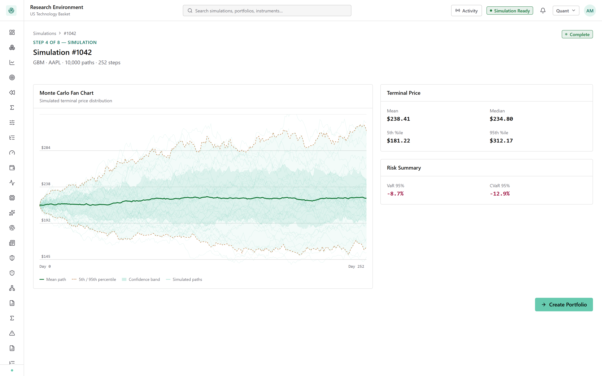
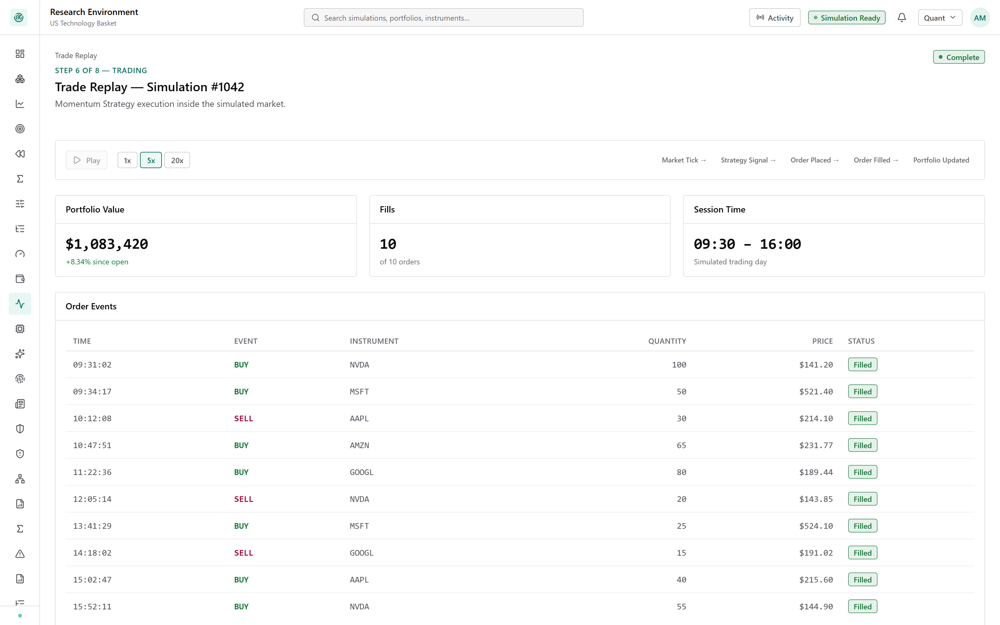
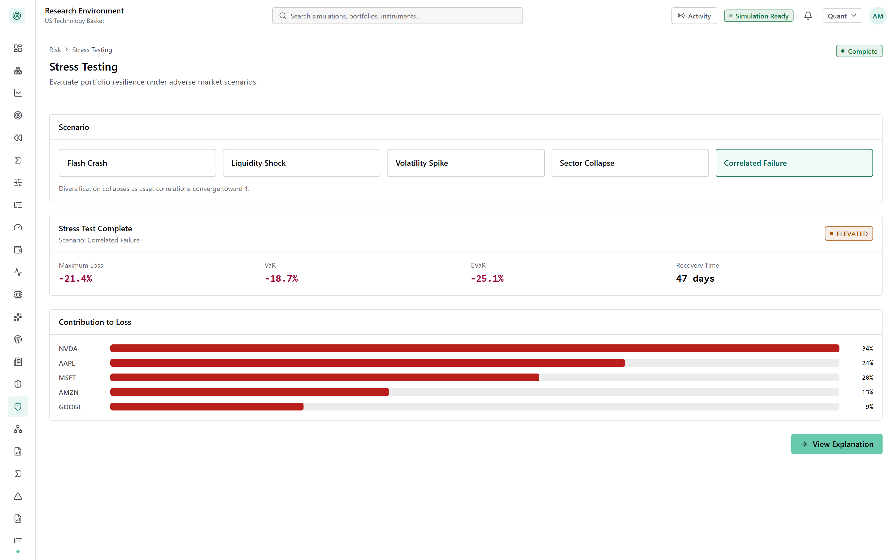
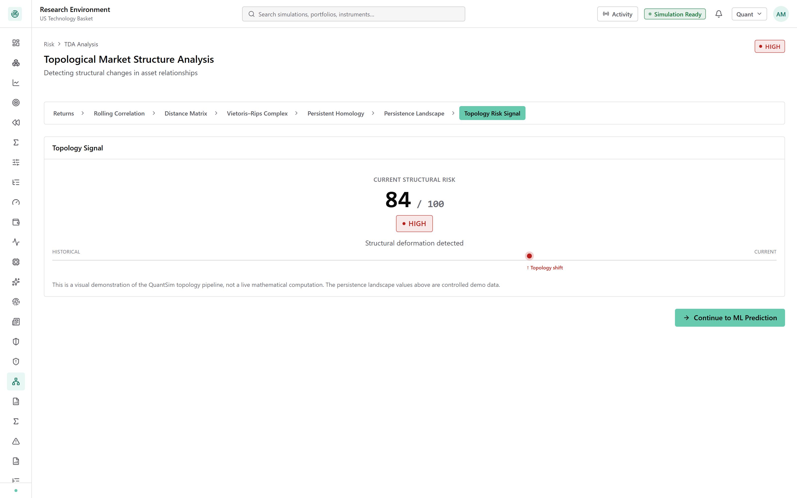
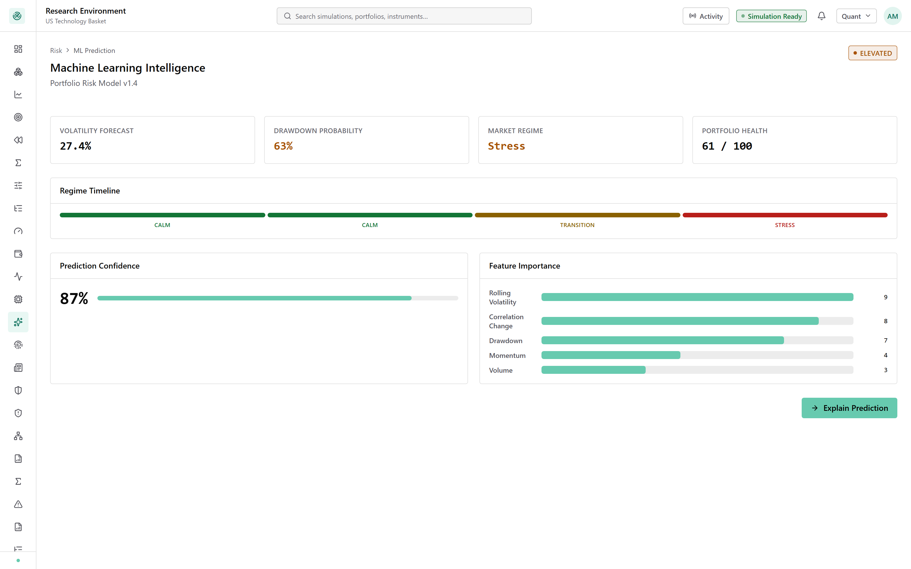
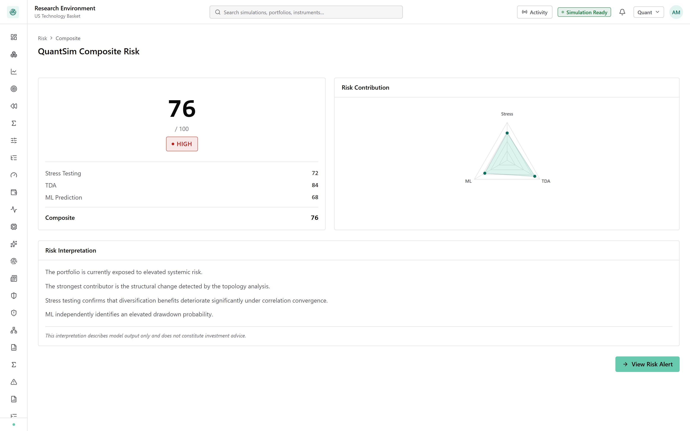
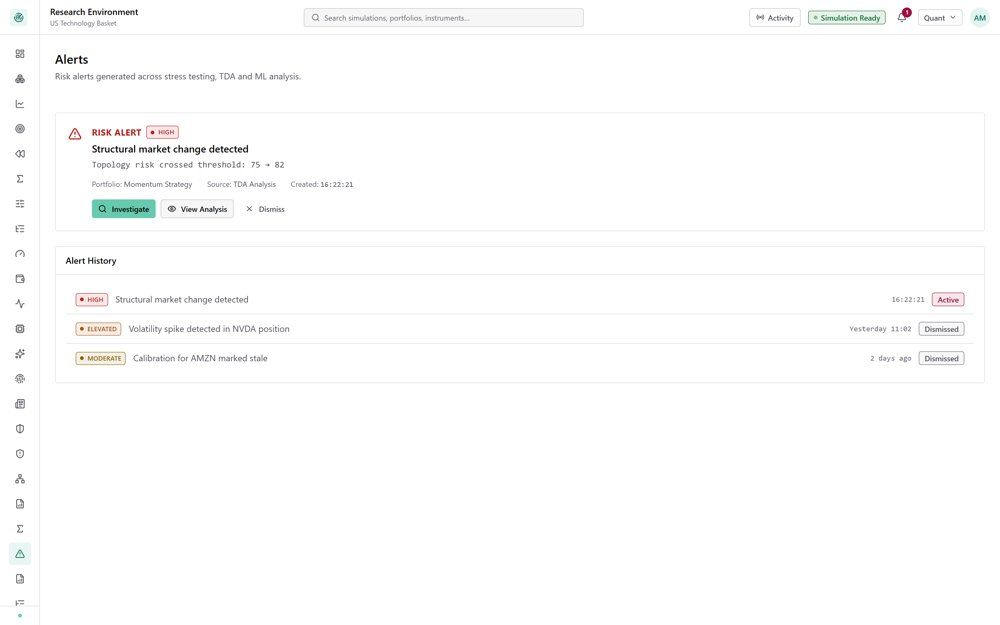
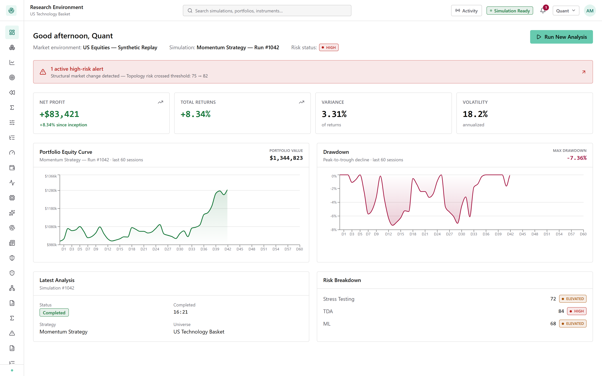

A tight, timed script covering only the four modules that carry the product's argument: Simulation, Trading, the three-lens Risk engine, and the Composite Risk decision. No reference screens, no administration, no extended-scope detours.
Route /dashboard · already loaded before you start talking

"This is QuantSim — an AI-assisted market simulation and portfolio risk platform. Real interface, mock data underneath. Right now the risk status reads MODERATE, and these two bottom panels are empty, because nothing has been analysed yet. Let's fix that."
Route /simulation/results/1042

"We define a market, pick a stochastic model — geometric Brownian motion, calibrated to real data — and generate ten thousand simulated price paths. This fan chart is that ensemble. It collapses into a distribution: mean, percentiles, and the two numbers that matter — VaR at minus 8.7%, CVaR at minus 12.9%."
Route /trading/replay/1042

"A momentum strategy trades inside that simulated market — real position weights, real transaction costs and slippage declared up front. Ten fills later, the portfolio is up 8.3%, sitting at just over $1.08 million. That's the book we're about to stress."
Route /risk/stress-testing · Correlated Failure scenario

"Now the risk engine — three independent lenses, starting with scenario stress. Under a 'Correlated Failure' — every position moving together, diversification gone — this portfolio loses 21.4%, and takes 47 days to recover. That recovery number is what turns a scary percentage into a business decision. And the chart underneath tells you exactly which position did it: Nvidia, a third of the loss."
Route /risk/tda-analysis · jump straight to the final stage — skip the six pipeline steps

"Second lens — topological data analysis. Instead of scoring returns, it measures the shape of how assets relate to each other, using persistent homology — a technique borrowed from pure mathematics. It converts that shape into one number: 84 out of 100, HIGH. Structural deformation detected — the market is moving as one thing, and diversification is quietly failing."
Route /ml/predictions

"Third lens — a trained model forecasting forward. 63% probability of a drawdown, market regime classified as Stress, at 87% confidence — and it shows its work: the top driver is correlation change. That's the same signal topology just flagged, found completely independently."
Route /risk/composite · pause 1 second before speaking

"Three independent lenses — three different failure modes — come together into one number: 76 out of 100, HIGH. And it's never shown alone: stress at 72, topology at 84, ML at 68, always displayed beside it. When three different methods agree that something is wrong, that's a signal worth acting on."
Route /alerts

"That composite score raises a HIGH alert automatically — with its source attached, so whoever sees it at 8am knows exactly where to look first: topology."
Route /dashboard · the exact screen from 0:00, now populated

"Same dashboard I opened with. Risk status was MODERATE — now it's HIGH, with a live alert and both panels filled in. Nothing about the portfolio's return changed. What changed is that we now know what it costs us."
"Simulation, trading, three independent risk lenses, one governed score, one alert. That's QuantSim end to end. Happy to go deeper on any piece."